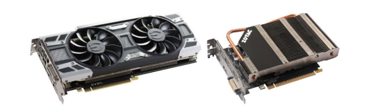
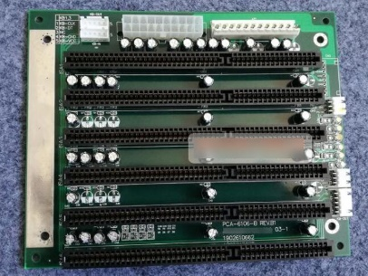
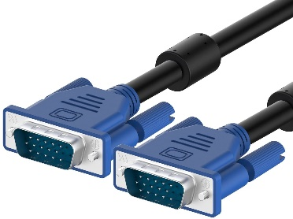
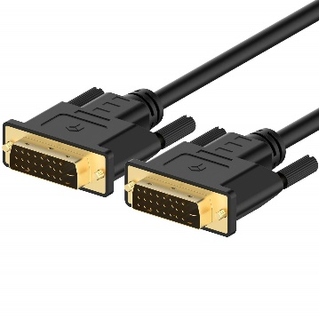
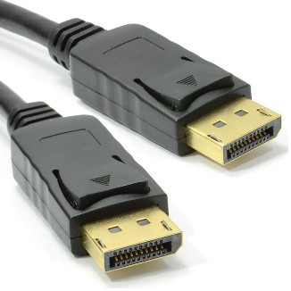
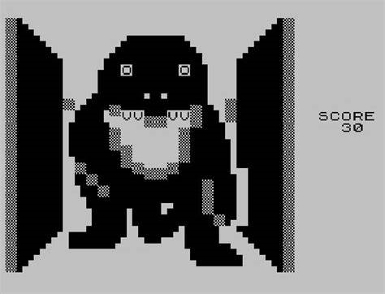

Grafikus kártyák
A grafikus kártya kiszámolja a megjelenítendő képi adatot és elküldi a monitor számára. Ezenfelül magas grafikai számításokat igénylő alkalmazásokat szolgál ki.
Integrált grafikus kártya
A processzorba van beleépítve és nem lehet fejleszteni vagy kicserélni. Általában alsó és középkategóriás laptopokban található, de sokan asztali számítógépekben is előnyben részesítik, ha nem igényelnek erős grafikai műveleteket. Ezek a kártyák nem alkalmasak számítógépes játékok és grafikai programok kiszolgálására.
Dedikált grafikus kártya
Az alaplaphoz egyedülálló egységként van csatlakoztatva, így a felhasználó által cserélhető és fejleszthető. Magas grafikai erőforrásokat igénylő alkalmazások kiszolgálására használatos. A legnagyobb előnye a legnagyobb hátránya is egyben. Nagy teljesítménye végett saját hűtésre van szüksége, nagyobb helyet foglal és több energiát is fogyaszt.
Grafikus kártyák főbb paraméterei
A grafikus feldolgozó egység órajele: Ez a paraméter adja meg, hogy a GPU mekkora órajelen képes üzemelni. Az órajel növelésévével a grafikus teljesítmény exponenciálisan növekszik. A legújabb modellek képesek 1,7 GHz-en működni. Az átlagos napi felhasználásra, a legalább 780 MHz -en működő GPU-val felszerelt grafikus kártyák az ajánlottak.
A videómemória típusa és mérete: Általánosan a grafikus kártyák, amelyek nagyobb méretű videómemória tárhellyel és annak újabb típusával rendelkeznek, jobb teljesítményre képesek, de ez nem minden esetben igaz.
A grafikus kártya fogyasztása: A számítógépekben a legnagyobb fogyasztónak számítanak. A kártya teljesítményétől függően a ma használatos modellek fogyasztása 75 és 350 W között mozog.
Grafikus kártyák főbb elemei
A grafikus kártyák több fontosabb elemből épülnek fel, amelyek a megfelelő működés szempontjából elengedhetetlennek számítanak.
Grafikus feldolgozó egység (GPU)
A grafikus feldolgozó egység a fő része a grafikus kártyának. Ez az alkatrész felelős az ösz- szes grafikai számításért. Általában, a legtöbb grafikus kártya csak egy GPU-val rendelkezik, de vannak kártyák melyekben kettő is található. Ezen egységek működését az architektúrájuk határozza meg, amelyet grafikus feldolgozó egység architektúrának nevezünk. Különböző grafikus kártyák különböző architektúrákkal rendelkeznek, ez általában gyártó függő. Az Nvidia legújabb architektúrája az Ampere az AMD-nek pedig az RDNA ™ 2. Több ezer mag található a GPU-ban melyek képesek párhuzamos feldolgozásra, és többfeladatos használatra. Különböző gyártók különböző neveket használnak ezeknek a magoknak a megnevezésére. Az Nvidia Cuda magoknak, míg az Amd Stream magoknak nevezi őket. Ezek egymástól különböző teljesítményre képesek, mivel különböző architektúrával rendelkeznek. Általánosságban minél újabb architektúrája van a grafikus feldolgozó egységnek, annál jobb a teljesítménye és a fogyasztása is.
Videómemória
Ez a második legfontosabb egység a grafikus a kártyában. Ezen a helyen van tárolva az összes grafikus adat és játék textúra, amit a GPU feldolgoz. Az újabb típusú videómemória növelheti a grafikus kártya teljesítményét, de ha a grafikus feldolgozó egység alacsony órajellel rendelkezik, akkor sok különbséget a felhasználó nem fog észrevenni.
GDDR5: A GDDR3-as és GDDR4 -es memóriák utódja. A belépő és közép szintű grafikus kártyáknál használatos videó memória.
GDDR5X:A GDDR5 tovább fejlesztett változata. Kétszer gyorsabb sebességet is elérhet, mint az utódja és kevesebb a fogyasztása is. A régebbi generációs felsőkategóriás grafikus kártyákban és nagy teljesítményű szerverekben használatos.
GDDR6:A memória 10 nm-es építési technológiával készült, ezáltal nagyobb grafikus teljesítményre képes, mint az ötödik generációs memóriák. Felhasználási területe elég széles körű. Használják mesterséges intelligencia képzésére, kriptovaluta bányászatára és virtuális valóság kiszolgálására. használatos.
GDDR6X: A legújabb videómemória típus, amely képes 7680x4320p-es képi adat kiszámolására, ezáltal a csúcskategóriás grafikus kártyákban találkozunk velük.
| Típus | Memória sebesség | Sávszélesség | Grafikus kártyák |
|---|---|---|---|
| GDDR5 | 8 Gb/s | 0.4 TB/s |
GTX 1060, GTX 1070 |
| GDDR6 | 16 Gb/s | 0.7 TB/s |
RTX 2070, RTX 2080 |
| GDDR6X | 21 Gb/s | 1 TB/s |
RTX 3080, RTX 3090 |
Feszültségszabályozó modul
A feszültség szabályozó modul a grafikus kártya táplálásáért felelős egység. Feszültség értékeket alakít át olyan értékűvé, ami már nem okoz problémát a grafikus kártyának. Általában 12V értékű feszültséget módosít 1.5V-osra. Ezen a feszültség értéken a grafikus kártya biztonságosan képes üzemelni. A feszültségszabályozók száma eltérhet a különböző grafikus kártyákban. Nagyon fontos ezeknek a moduloknak a hűtése, mivel gyakran jobban felmelegszenek, mint maga a grafikus feldolgozó egység.
Hűtő modul
Minden grafikus kártya felvan szerelve hűtő modullal, hogy a grafikus feldolgozó egységet, a videómemóriát és a feszültségszabályozó modult megfelelő hőmérsékleten tartsa, mivel ezeknek az alkatrészeknek a hűtése nélkülözhetetlen a kártya megfelelő működése érdekében. Két típusú modult különböztetünk meg: aktívat és passzívat. A passzív csak egy hűtőbordát tartalmaz, ezáltal a grafikus kártya hangtalanul képes működni. Hátránya, hogy nem képes a grafikus kártyát magasabb órajeleknél megfelelő hőmérsékleten tartani. Ez az oka, hogy csak belépő szintű grafikus kártyáknál használatosak. Az aktív hűtő modul(ventilátor) pont ezért jobban elterjedt és a felső kategóriás kártyákat, csak aktív hűtőkkel szerelik fel.
Bal oldalon az aktív, jobb oldalon a passzív hűtő modullal felszerelt videókártya látható
Grafikus kártyák alaplapi csatlakozói
A videókártya az alaplaphoz való csatlakoztatásának a szabványa. Az újabb típusú szabványok alkalmazásával növelhető a grafikus kártya adatátviteli sebessége, amely a grafikus teljesítmény egyik legfontosabb tényezője.
ISA
Az első alaplapi csatlakozó szabvány, az IBM fejlesztette ki 1981-ben. Akkoriban nagyon elterjedt. Az első alaplapok mindegyike ezzel a technológiával volt felszerelve. A grafikus kártyák melyek az ISA szabványt használták, a processzoron keresztül címezték meg a rendszermemóriát, ezzel a megoldással elég lassúnak bizonyultak. A maximum átviteli sebességük 2-3-megabyte másodpercenkénti volt.
PCI
Az ISA-t váltotta az 1990 es évek elején. A PCI csatlakozók megengedték a grafikus feldolgozó egységnek, hogy ne kelljen igénybe vennie a processzort a memória címzésénénél. Ezáltal az átviteli sebessége 132 megabyte/másodpercre nőtt.
AGP
Az előző kettő csatlakozó nagy hátránya. hogy a kommunikációs vonalat meg kellet osztania az alaplap többi bővítő csatlakozójával. Az AGP ezt küszöböli ki, mivel saját közvetlen kommunikációs csatornával rendelkezik a memóriával. Ez a közvetlen csatorna magasabb átviteli sebességet tesz lehetővé. Az alaplapok csak egy AGP kártyát tudnak támogatni. A gyakorlatban ez azt jelenti, hogyha szükségünk van még egy grafikus kártyára akkor kénytelenek leszünk azt más fajta szabvánnyal csatlakoztatni. Az AGP bővítő kártyák négy fajta változatban elérhetőek: 1X, 2X, 4X és 8X. Az AGP-8X a leggyorsabb, akár 2100 megabyte másodpercekénti átvitelére képes.
PCI Express
A grafikus kártyák csatlakozóinak legújabb fejlesztése. A fő
különbség a PCI és a PCI Express között, hogy az utóbbiban
eltörölték a közös kommunikációs csatornát. Ehelyett a csatlakozó
összes adattűje külön dedikált soros csatornát használ a
kommunikációra.
Négy fajta típusa elérhető: PCI-Ex1, PCI-Ex4, PCI-Ex8 és PCI-Ex16 A
PCI-Ex16 a támogatott alaplapokon akár 4 gigabyte másodpercenkénti
írási és olvasási sebességre képes.
Grafikus kártyák kimeneti csatlakozói
A kiszámolt képi adatot ezeken a csatlakozókon keresztül továbbítja a grafikus kártya a monitornak.
VGA
Az IBM fejlesztette ki 1987-ben, akkoriban még az általánosnak számító 640x480 felbontásra, de 1920x1080-as felbontást is kitudja szolgálni. Ma már annyira nem elterjedt, mivel csak a kép átvitelére képes. A csatlakozójában 15 darab kis adatátviteli tűt találunk. A csatlakozó tetején 5 darab, a közepén 5 darab és az alján szintén 5 darab kis tű helyezkedik el. Minden egyes tűnek saját funkciója van. Például az első tű a piros, míg a második a zöld és a harmadik a kék szín átvitelére szolgál.
DVI
Magas minőségű videók átvitelére lett kifejlesztve. Ezek a videók akár 2560x1600 felbontást is elérhetik. Manapság is még számos projektor, régebbi típusú grafikus kártya és házi mozi rendszer csatlakozója. A modern kártyákon nem találhatóak meg, mivel az újabb technológiák kiszorítottak őket a piacról.
Három fajta típusa létezik:
DVI-D: Kép átvitelére alkalmas
DVI-A:Hang átvitelére alkalmas
DVI-I:A hang és a kép átvitelére is egyaránt alkalmas
HDMI
A HDMI szabványt 2000-ben fejlesztették ki a Silicon Image laboratóriumában 1920x1200p es kép és többcsatornás digitális hang átvitelére egyetlen vezetéken keresztül. Gyorsan meghódította a piacot, ma egyaránt a legelterjedtebb szabvány háztartásokban és az ipari szektorban is. Használják grafikus kártyáknál, PC-knél, TV-knél, fényképezőknél, játékkonzoloknál stb. Három fajta méretben elérhető: HDMI A, mini HDMI és micro HDMI. Az évek során számos különböző szabvány verziót fejlesztettek ki. Az első szabvány a HDMI 1.0 volt, a ma használatos legújabb pedig a HDMI 2.1.
| Típus | Adatátvitel | Színmélység | Felbontás |
|---|---|---|---|
| HDMI 1.0 | 4.95 Gb/s | 24-bit | 1920x1080p 60Hz |
| HDMI 1.3 | 10.2 Gb/s | 48-bit | 2560x1600p 75Hz |
| HDMI 1.4 | 10.2 Gb/s | 48-bit | 4096 × 2160p 24Hz |
| HDMI 2.0 | 18 Gb/s | 48-bit | 4096 × 2160p 60Hz |
| HDMI 2.1 | 48 Gb/s | 48-bit | 7680x4320p 120Hz |
DisplayPort
A DisplayPortot a Vesa fejlesztette ki 2006-ban, azzal a céllal, hogy megalkossa a következő generációs kiviteli interfészt. Kis csatlakozóval rendelkezik, ez végett közkedvelt a vékony laptopokban. Továbbá a DisplayPort egyik legnagyobb előnye egy segédcsatorna jelenléte, ami lehetővé teszi, hogy a szokványos kép és hangon kívül más adatokat is képes közvetíteni. A HDMI szabvány fő vetélytársának számít.
Grafikus kártyák fejlődése
A számítógépes hardver folyamatosan fejlődik, mivel újabb és újabb technológiákat fedeznek fel, hogy minél kisebb alkatrészeket legyenek képesek gyártani, ezáltal növelve az egyes elemek teljesítményét. Az elmúlt évtizedekben a grafikus kártyák nagyon sokat fejlődtek. A gyártók mindig is arra törekedtek, hogy az ő terméküket válassza a vásárló, ezáltal nem csak az alkatrészek mérete változott, hanem esztétikai szinten is sokat fejlesztettek. Sok vásárlónak az is szempont a grafikus kártyák vásárlásánál, hogy milyen alakú hűtőbordák vannak elhelyezve a kártyákon, képes-e RGB szintű megvilágításra stb. Az elmúlt években nagyon sok gyártó próbált a piacra betörni, de csak az Nvidia és az AMD volt képes bent is maradni. A mostani években kijelenthetjük, hogy az Nvidia óriási előnyt élvez az AMD-vel szemben, ezáltal a piac egyeduralkodójává vált.
Az első grafikus kártyák
- A legelső grafikus kártya az IBM monochrome kijelzős adapterre volt, ami képes volt nyolcvan oszlop és huszonöt sor megjelenítésére. Ez a kártya 1981-ben jelent meg.
- Az első szín megjelenítésre képes kártya az Intel iSBX 275 volt 1983-ban, ami nyolc különböző szín megjelenítésére képes 256x256-as formátumban.
- Ezután egy nagy ugrás következett be, mivel megjelent ATI VGA Wonder névre keresztelt kártya, ami már a 2D-és rendeléssel is megbirkózott.
- A játékos korszakot a 3dfx Voodoo 1 indította el, mivel képes volt 3D-és renderelésre, így kisebb játékok futtatásával is megbirkózott.
- Az első aktív hűtő modullal felszerelt kártya az NVIDIA Geforce 256 DDR volt, ami már a DirectX 7 -tet is támogatta.
Ezek a kártyák adtak alapot a mai grafikus kártyáknak, amelyek több ezer munkát és kikapcsolódást biztosítanak az emberek számára.
Az ábrán a 3D Monster Maze, a világ első 3D-és játéka látható